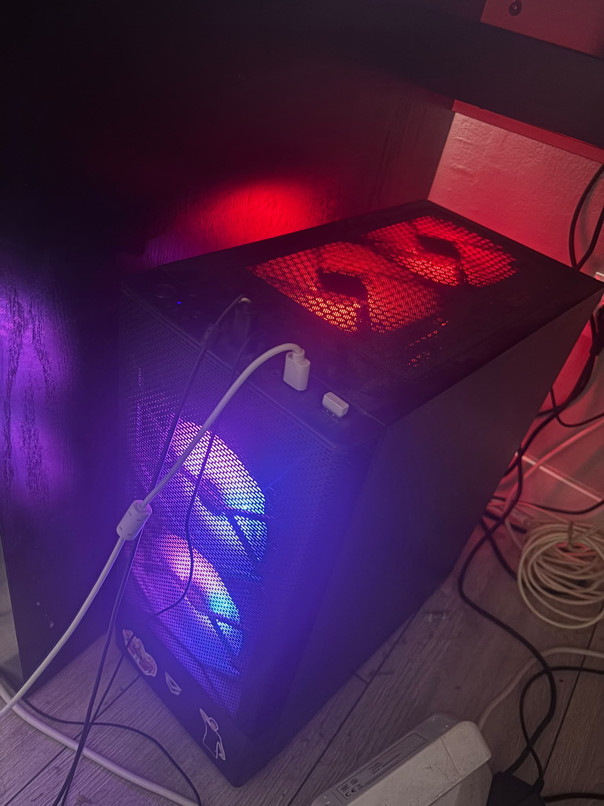

El equipo

Ordenador de sobremesa montado por piezas, pensado para juegos y para trabajos que necesitan mucha potencia gráfica.
Especificaciones
- Tipo de equipo
- Ordenador de sobremesa (torre)
- Procesador
- AMD Ryzen 7 7800X3D
- Memoria RAM
- 32 GB
- Tarjeta gráfica
- NVIDIA GeForce RTX 4060
Usos del equipo
- Juegos con alta tasa de fotogramas
- Prácticas del ciclo: máquinas virtuales, Docker y Packet Tracer
- Desarrollo web con Visual Studio Code
- Edición de vídeo e imagen
Cómo comprobar los datos en Windows
- Pulsar Ctrl + Shift + Esc para abrir el Administrador de tareas.
- Entrar en la pestaña Rendimiento.
- Pulsar en CPU para ver el modelo del procesador.
- Pulsar en Memoria para ver la RAM instalada.
- Pulsar en GPU para ver la tarjeta gráfica.